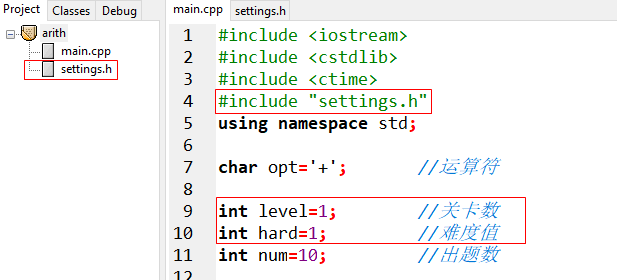

现在游戏可以随机出10道题做+法了，可以如何控制加数位数呢？想做-法怎么办？多长时间给出答案合适呢？
为了回答上述问题增加游戏设置功能。
鼠标右击arith项目，选择New File
输入如下程序代码
void settings(int &level,char &opt,int &hard){
}
按Ctrl+s保存

输入文件名settings.h点击保存

在main.cpp中增加语句
#include "settings.h"
和
int level=1; //关卡数
int hard=1; //难度值
完善settings.h增加level的输入处理
void settings(int &level,char &opt,int &hard){
char c[200]; //接收输入字符串
do{
cout << "Please select level([1]-18):"; //提示输入游戏级别
gets(c); //读取输入信息
if(strlen(c)==0) //判断输入信息长度
level = 1; //如果输入信息长度为0，设缺省级别为1
else
level = atoi(c); //否则将数字字符串转换成数值
}while(level<1 || level>18); //如果输入的难度级别不是1~18要求重新输入
}
测试一下，在main.cpp中增加如下语句

F11执行一下
Please select level([1]-18):6
level=6,opt=+,hard=1
继续完善settings.h中的settings函数
void settings(int &level,char &opt,int &hard){
char c[200]; //接收输入字符串
... ...
do{
printf("Please select operator([+],-):");//提示选择+/-
gets(c); //读入运算符
if(strlen(c)==0) //判断输入信息长度
opt = '+'; //如果输入信息长度为0，设置缺省运算符为+
else
opt = c[0]; //否则读入第一个字符
}while(opt!='+' && opt!='-'); //如果不是+/-运算符，要求重新输入
}
回到main.cpp获得焦点，按F12重新构造全部，再按F11执行
Please select level([1]-18):
Please select operator([+],-):
level=1,opt=+,hard=1
增加了运算符选择功能
继续完善settings.h中的settings函数
void settings(int &level,char &opt,int &hard){
char c[200]; //接收输入字符串
... ...
do{
printf("Please select Hard([1]-60):"); //提示选择难度级别
gets(c); //读入难度
if(strlen(c)==0) //判断输入信息长度
hard = 1; //如果输入信息长度为0，设置缺省难度为1
else
hard = atoi(c); //否则将难度数字字符串转换为难度数值
}while(hard<1 || hard>60); //如果输入的难度范围不在1~60之间，要求重新输入
}
回到main.cpp获得焦点，按F12重新构造全部，再按F11执行
Please select level([1]-18):
Please select operator([+],-):
Please select Hard([1]-60):
level=1,opt=+,hard=1
增加了运算符选择功能